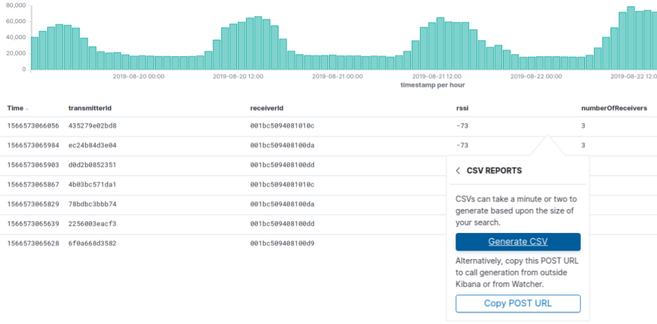
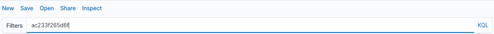
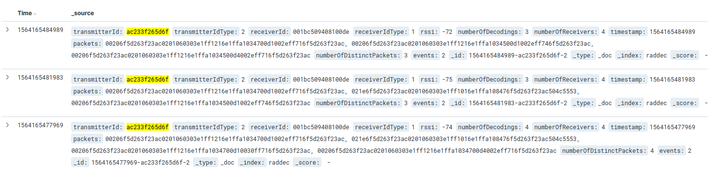
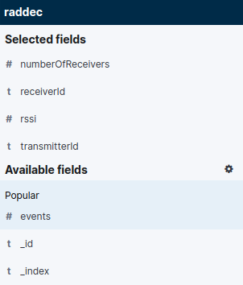
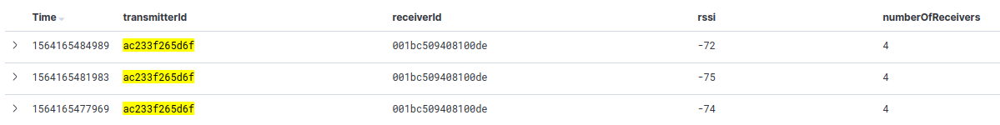
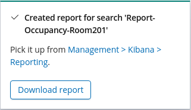

Export data from Kibana as a CSV file
Our step-by-step guide to export location and sensor data as a CSV file.
The TL;DR (Too Long; Didn't Read)
Learn how we at reelyActive export location and sensor data from Kibana.
- What will this accomplish?
- A CSV file of the selected data will be available to save/download from Kibana.
- What's a CSV file?
- CSV stands for comma-separated-values: a standard text file easily imported into any spreadsheet software.
- Why export data?
- To store the data outside Elasticsearch and/or to manipulate the data with a tool other than Kibana.
Prerequisites
reelyActive open source software with Elasticsearch and Kibana.
-

[Optional] Prepare a reelyActive laptop from scratch
Includes our step-by-step guide to install Elasticsearch and Kibana on a Linux computer/server. -

[Optional] Set up a hosted Elasticsearch Service
Includes our step-by-step guide to setup Elastic's convenient hosted cloud service.
In order for there to be data to visualise, the reelyActive software must also have collected and written raddec data to Elasticsearch.
Selecting a transmitter Id Step 1 of 4
Select a transmitter Id to visualize its journey.
- What's a journey ?
- The visualisation over the day of a specific transmitter according to the time and location.
- Why a journey report?
- The goal of the journey report is to get a holistic view of what the transmitter is going through.
From the Discover tab, search for a specific transmitter by entering its id in the Search bar.
You should visualize the transmitter information as below:
Preparing the data Step 2 of 4
Prepare the data you want to export by selecting specific fields.
- What's a field ?
- A stream of data, called raddec, is divided by fields : receiverId, transmitterId, RSSI etc.
- Why Kibana?
- Kibana makes it easy to visualise data from an Elasticsearch database, where the source data is stored.
Set the time Part 1
Before selecting the fields, set the date format as x (Unix Millisecond Timestamp). By default the date format is : MMM D, YYYY @ HH:mm:ss.SSS. To change it, open Kibana and then :
- Select the Management tab from the left menu bar.
- Click on Advanced Settings in the Kibana's list
- Enter x in the Date Format input.
Set the fields Part 2
- 
-
From the Discover tab prepare the data by following the next steps :
- Select the time range from the time filter to visualise data in a specific range.
- From the raddec index choose the fields of data you want to export by feeding the Selected Fields list.
- Add an Available field by clicking the Add button when the mouse is over it.
- Once the Selected Fields list is complete, Save it from the top menu bar.
- Choose a Name that will be the name of the CSV file generated.
After selected the fields you should visualize them as below:
The data is now prepared and ready to be export.
Creating a CSV file Step 3 of 4
Creating a CSV file contaning the selected fields in Step 1.
- What for?
- The CSV file will store the selected data in tables.
-

-
From the Discover tab:
- Click on the Share button from the top menu bar.
- Select the CSV Reports option.
- Click on the Generate CSV button.
Recovering the CSV file Step 4 of 4
Recovering the CSV file in the Management tool in Kibana.
- What for?
- To find and download the CSV file for exploring it outside of Kibana.
- 
-
Once the file is generated, a pop up will appear to allow the download of the file. If you miss the pop up the file can be find in the management tab of Kibana.
- Click on the Management tab.
- Go to Reporting link.
- Find the report generated from the Reports list and download it.
Where to next?
Create other visualizations, or continue exploring our open architecture and all its applications.
-

reelyActive Kibana integration overview
Find links to all our Kibana tutorials. -

diyActive Home
The home for reelyActive developers.